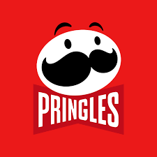
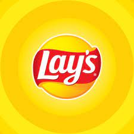
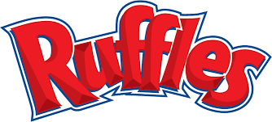

Learn more about the variety of Potato Chips in the world



What are Potato Chips?
Potato chips are thin slices of potato that have been deep fried or baked until crunchy. They are
commonly served as a snack, side dish, or appetizer.
Nutrition Facts
Most traditional snack chips provide between 150 and 200 calories per serving. A single
serving of regular potato chips provides 160 calories, 10 grams of fat, 15 grams of
carbohydrate, and 2 grams of protein.
History
The earliest known recipe for something similar to today's potato chips is in William
Kitchiner's book The Cook's Oracle published in 1817, which was a bestseller in the United
Kingdom and the United States.
Calculate Nutrition
Game Section
Details
The evolution and popularity of potato chips over time are remarkable.
Pringles Stacker Game
Score: 0
Pringles
Pringles is an American brand of stackable potato-based chips invented by Procter & Gamble (P&G) in
1968 and marketed as "Pringle's Newfangled Potato Chips". It is technically considered an extruded
snack because of the manufacturing process. The brand was sold in 2012 to Kellogg's.
As of 2011, Pringles were sold in more than 140 countries. In 2012, Pringles were the fourth most
popular snack brand after Lay's, Doritos, and Cheetos (all manufactured by Frito-Lay), with 2.2%
market share globally.
Lays is one of the oldest potato chip brands, known for their classic, crispy taste and a variety of
flavors.
Every bag of Lay's Potato Chips in the US is made from their very own chip-perfecting potatoes grown
on over 100 farms across the US and a handful in Canada.
Lays uses real potatoes, high-quality oils, and a touch of salt to create their deliciously crunchy
chips. They are committed to using the best ingredients to ensure a satisfying snacking experience.
Ruffles is a brand of ridged potato chips known for their thick texture and strong flavor.
It is an American brand of crinkle-cut potato chips. The Frito Company acquired the rights to Ruffles
brand potato chips in 1958 from its creator, Bernhardt Stahmer, who had adopted the trademark on May
11th, 1948.
Ruffles are produced in a variety of flavors and presentations in addition to traditional potato chip
flavors, although some of these variants are produced exclusively for regional markets. Existing
varieties include: sour cream & onion, cheddar & sour cream, cheese, barbecue, salt & vinegar, cream
cheese, and hot wings.